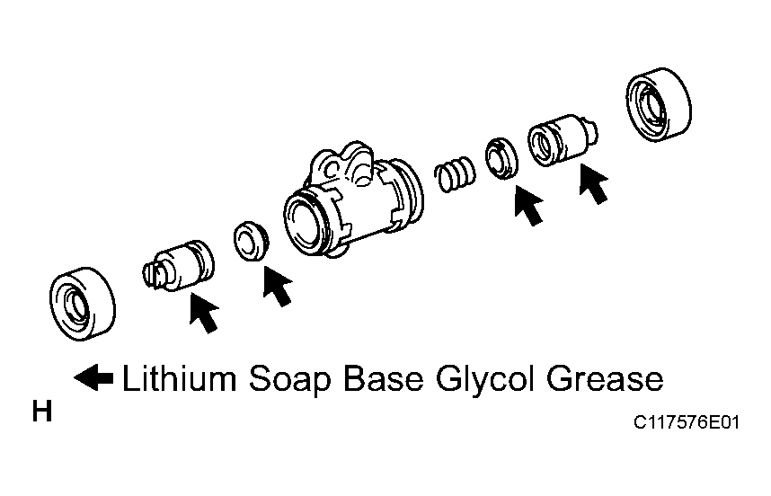

Rear Brake Shoe, Wheel Cylinder & Brake Drum: Reassembly
HINT:
- Use the same procedures for the LH side and RH side.
- The procedures listed below are for the LH side.
- INSTALL REAR WHEEL CYLINDER CUP KIT
- Apply lithium soap base glycol grease to 2 new wheel cylinder cups and the 2 pistons.
- Install the 2 wheel cylinder cups on each piston.
- Install the compression spring and 2 pistons to the wheel brake cylinder.
- Install 2 new cylinder dust boots to the wheel brake cylinder.
- TEMPORARILY TIGHTEN REAR BRAKE DRUM BLEEDER PLUG
- Install the bleeder plug to the cylinder.

Courtesy of © TOYOTA, LICENSE AGREEMENT TMS1002HINT:
The bleeder plug will be tightened to a torque specification in the "bleed air from brake line" procedures.
- Install the bleeder plug cap.
- Install the bleeder plug to the cylinder.
- INSTALL REAR WHEEL BRAKE CYLINDER ASSEMBLY LH
- Install the wheel brake cylinder with the bolt.
Torque: 9.8 N*m (100 kgf*cm, 87 in.*lbf)
- Using SST, connect the brake line.
SST 09023-00101
Torque: 15 N*m (155 kgf*cm, 11 ft.*lbf) without SST
14 N*m (143 kgf*cm, 10 ft.*lbf) with SST
HINT:
Use a torque wrench with a fulcrum length of 30 cm (11.81 in.).
- Install the wheel brake cylinder with the bolt.
- APPLY HIGH TEMPERATURE GREASE
- Apply high temperature grease to the surface of the backing plate to which the shoe is attached.
- INSTALL REAR BRAKE PARKING BRAKE SHOE LEVER SUB-ASSEMBLY
- Using needle-nose pliers, install the parking brake lever with a new C-washer.
- INSTALL REAR BRAKE SHOE
- Using needle-nose pliers, connect the No. 3 parking brake cable to the parking brake shoe lever.
- Using SST, install the rear brake shoe, pin, shoe hold down spring and shoe hold down spring cup.
SST 09718-00010
- INSTALL REAR BRAKE AUTOMATIC ADJUST LEVER LH
- Install the automatic adjust lever and automatic adjust lever tension spring to the front brake shoe.
- INSTALL PARKING BRAKE SHOE STRUT LH
- Disassemble the strut. Apply high temperature grease to the areas indicated by the arrows in the illustration. Then assemble the shoe strut.
- Install the shoe return spring to the shoe strut.
- Install the shoe strut as shown in the illustration.
- INSTALL FRONT BRAKE SHOE
- Connect the tension spring to the front brake shoe and rear brake shoe.
- Using SST, install the front brake shoe, pin, shoe hold down spring and shoe hold down spring cup.
SST 09718-00010
- Using needle-nose pliers, connect the tension spring to the front brake shoe and rear brake shoe.
- CONNECT PARKING BRAKE SHOE STRUT LH
- Using SST, connect the shoe return spring to the front brake shoe and rear brake shoe.
SST 09703-30011
NOTE: Be careful not to damage the wheel cylinder boot.
- Using SST, connect the shoe return spring to the front brake shoe and rear brake shoe.
- CHECK REAR BRAKE DRUM INSTALLATION
- Check that each part is installed properly.
- Measure the inside diameter of the brake drum and diameter of the brake shoe. Check that the difference between the diameters is the correct shoe clearance.
Standard shoe clearance: 0.6 mm (0.024 in.)
NOTE: There should be no oil or grease on the contact surfaces of the brake shoe and brake drum.
- INSTALL REAR BRAKE DRUM SUB-ASSEMBLY
- ADJUST REAR BRAKE DRUM SHOE CLEARANCE
- Temporarily install the 2 hub nuts.
- Remove the pin plug, and turn the adjuster to expand the shoe until the drum locks.
- Rotate the adjuster backwards by 8 notches.
- Install the hole plug.
- Remove the 2 hub nuts.
- FILL RESERVOIR WITH BRAKE FLUID (See BRAKE FLUID )
- BLEED AIR FROM BRAKE MASTER CYLINDER (See BRAKE FLUID )
- BLEED AIR FROM BRAKE LINE (See BLEEDING )
- CHECK BRAKE FLUID LEVEL IN RESERVOIR (See BLEEDING )
- CHECK FOR BRAKE FLUID LEAKAGE
- INSTALL REAR WHEEL
Torque: 103 N*m (1,050 kgf*cm, 76 ft.*lbf)
- CHECK PARKING BRAKE LEVER TRAVEL (See ADJUSTMENT )
- ADJUST PARKING BRAKE LEVER TRAVEL (See ADJUSTMENT )